Newcomer looks around, then joins
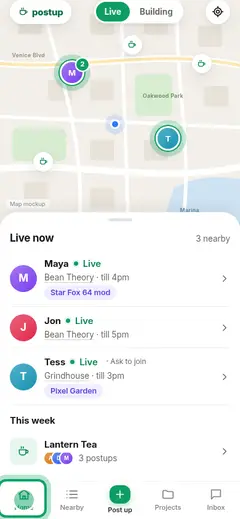
1 · Home page (/)
Home in Live mode: map + Live now. [M1018b] [M1025]
● taps “Home”
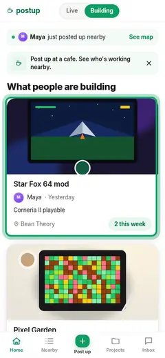
2 · Home page (/)
Building: the welcome line "Post up at a cafe. See who's working nearby." and projects first. [M1018b] [drawn] [M1025]
● taps “Star Fox 64 mod”
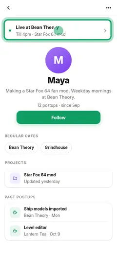
3 · Project
Opens a project: updates and past postups. [FS] [M1025]
● taps “Maya”
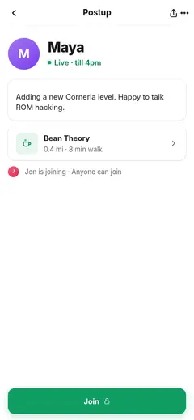
4 · Profile
Maker's profile: past postups, regular cafes, live now. [FS] [F065] [M1025]
● taps “Live at Bean Theory”
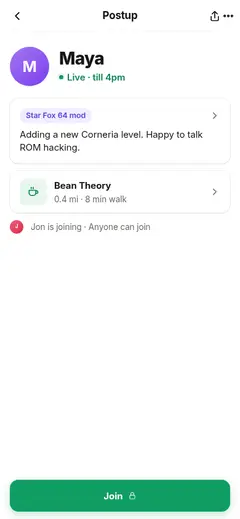
5 · Postup · anyone can join
Her live postup; Join shows 🔒. [FS] [M1024]
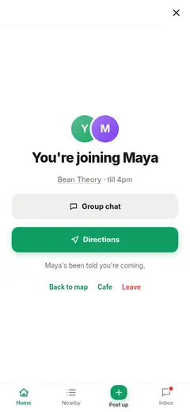
6 · Postup · anyone can join + signin
Join → sign-in sheet (Apple / Google). [FS] [TK§1] [M1024]

7 · You're joining
Signed in and joined in one go; the join is not lost. [FS] [M1018] [M1024]
⇄ 3 flows enterable here
Nobody live nearby (newcomer)
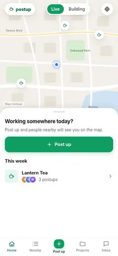
1 · Home page (/)
Home in Building mode: closest projects. [M1018c]
⇄ 1 flow enterable here
2 · Empty area
Nobody's live nearby: Recently nearby (past postups) and Projects nearby, then cafes to be the first. [M1032]
● taps “M”

3 · Profile
Maya's profile: regular cafes, past postups. [FS] [M1032]
● taps Back
4 · Empty area
The empty-area screen again. [M1032]
● taps “Star Fox 64 mod”
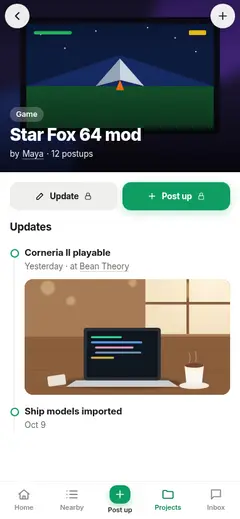
5 · Project
A project nearby: updates and past postups. [FS] [M1032]
Join someone live
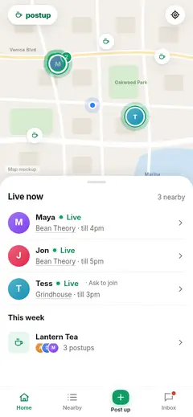
1 · Home page (/)
Live now list. [M1018b] [M1024]
⇄ 2 flows enterable here
● taps “M”

2 · Postup · anyone can join
Who, project, cafe, who else is joining. [FS] [M1024]
⇄ 1 flow enterable here
● taps “Join”

3 · You're joining
You're joining; the poster is told. [FS] [M1024]
⇄ 2 flows enterable here
● taps “Directions”
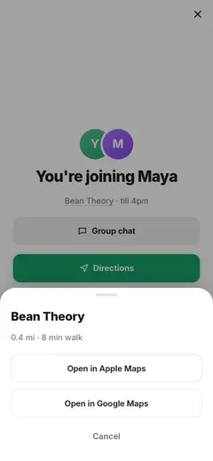
4 · You're joining + dirs
Directions sheet: Apple / Google Maps. [FS] [M1024]
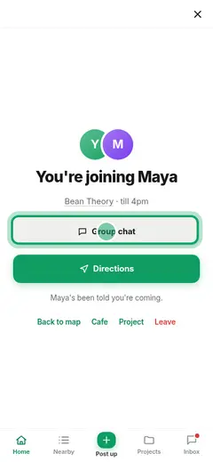
5 · You're joining
Back on the joined screen. [M1031-draft]
⇄ 2 flows enterable here
● taps “Group chat”

6 · Group chat
Says "on my way" in the postup chat. [F096] [M1024]
⇄ 1 flow enterable here
Share link to a live postup
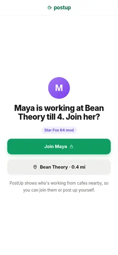
1 · Share link · live postup
Landing for the shared postup. [FS] [R39]

2 · Share link · live postup + signin
Join → sign-in sheet. [FS] [M1024]

3 · You're joining
Joined. [FS] [M1024]
⇄ 2 flows enterable here
● taps “Group chat”
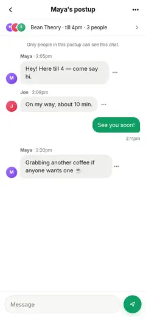
4 · Group chat
Postup chat. [F096] [M1024]
⇄ 1 flow enterable here
Nobody live nearby (signed in)
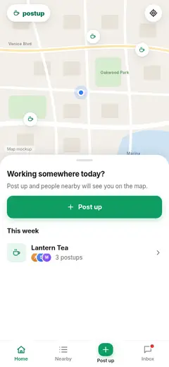
1 · Home page (/)
Home in Building mode: closest projects. [M1018c]
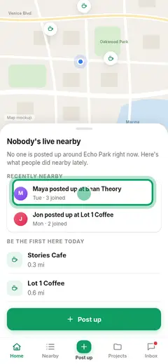
2 · Empty area
Nobody's live nearby: Recently nearby (past postups) and Projects nearby, then cafes to be the first. [M1032]
● taps “M”
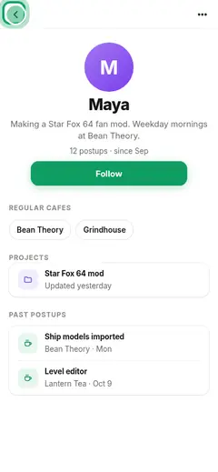
3 · Profile
Maya's profile: regular cafes, past postups. [FS] [M1032]
⇄ 1 flow enterable here
● taps Back
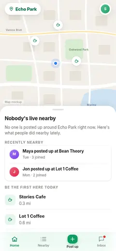
4 · Empty area
The empty-area screen again. [M1032]
● taps “Star Fox 64 mod”
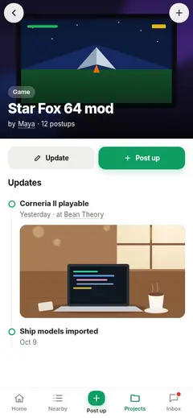
5 · Project
A project nearby: updates and past postups. [FS] [M1032]
⇄ 2 flows enterable here
Came to post up: first post with sign-in
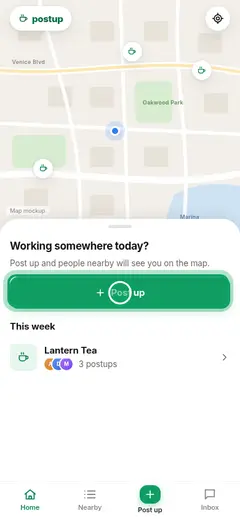
1 · Home page (/)
Taps Post up. [M1018b]
⇄ 1 flow enterable here
● taps “Post up”
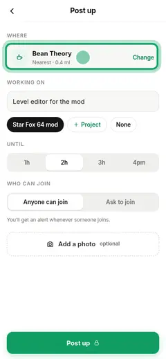
2 · Post up
Nearest cafe prefilled. [FS] [F062]
● taps “Bean Theory”
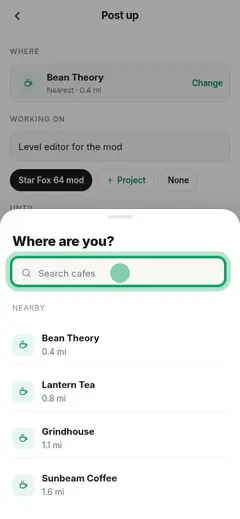
3 · Where are you?
Change → cafe picker by distance. [F062] [R17]
● taps “tap”
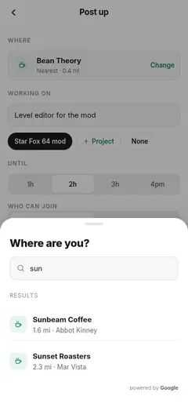
4 · Cafe search
Searches a cafe. [FS]

5 · Cafe search + signin
Post up 🔒 → sign-in. [FS] [TK§1]
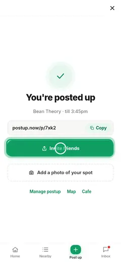
6 · You're posted up
Posted; link to copy. [FS]
⇄ 1 flow enterable here
● taps “Invite friends”
7 · You're posted up + share
Invite friends: share sheet. [drawn] [M1024]
Returning poster
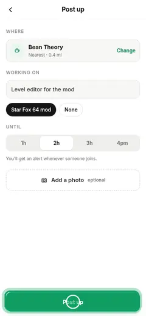
1 · Post up
Last project and nearest cafe preselected; no 🔒. [FS] [M1024]
⇄ 1 flow enterable here
● taps “Post up”
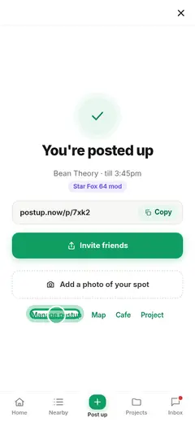
2 · You're posted up
Posted. [FS]
⇄ 1 flow enterable here
● taps “Manage postup”
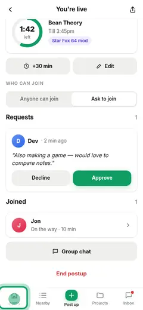
3 · You're live
You're live: time left, requests, chat. [FS] [F057]
⇄ 2 flows enterable here
● taps “Home”

4 · Home page (/)
Your live state shows on home. [R22]
⇄ 3 flows enterable here
Hosting live: extend, edit, end
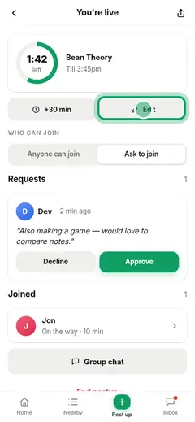
1 · You're live
+30 min extends. [FS]
⇄ 2 flows enterable here
● taps “Edit”
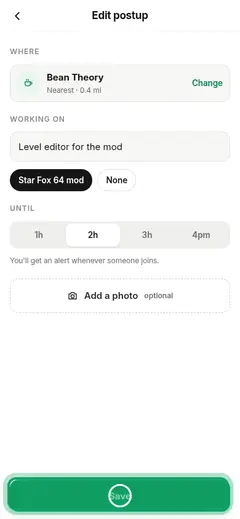
2 · Edit postup
Edit cafe/what/until; Save → #live. [FS] [drawn]
● taps “Save”
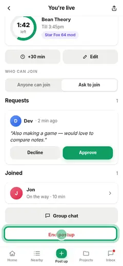
3 · You're live
Back on live. [FS]
⇄ 2 flows enterable here
● taps “End postup”
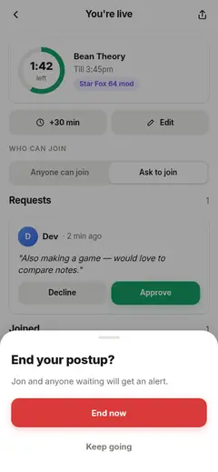
4 · You're live + endlive
End postup → confirm; joiners and waiters alerted. [FS] [drawn]
● taps “End now”
5 · My profile
Back home. [M1024] Ending your own postup doesn't change who else is live nearby (live = nearby, not this postup). [M1031-draft]
⇄ 1 flow enterable here
Postup chat
Report and block
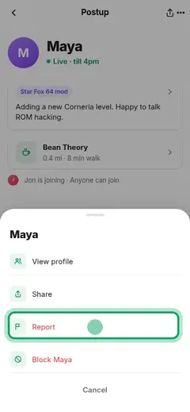
1 · Postup · anyone can join + more
More: profile, share, report, block. [FS] [F059]
● taps “Report”
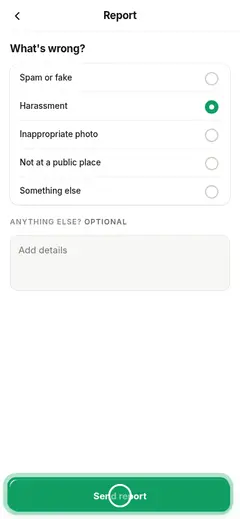
2 · Report
Reason + details. [F059] [drawn]
● taps “Send report”
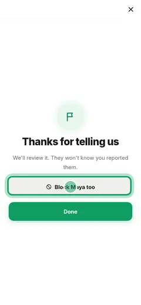
3 · Reported
Thanks; offer to block. [FS]
● taps “Block Maya too”
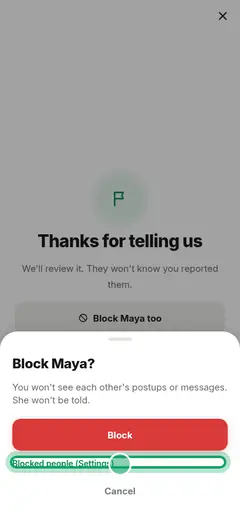
4 · Reported + block
Block: neither sees the other; they aren't told. [FS] [F059]
● taps “Blocked people (Settings)”
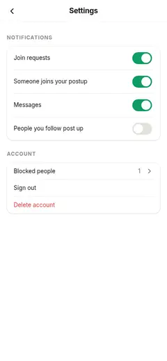
5 · Settings
Blocked people list to undo. [FS] [F065]
⇄ 2 flows enterable here
Leave a postup you joined
Share link to a project
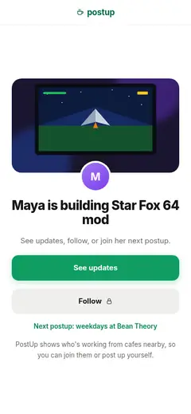
1 · Share link · project
"Maya is building Star Fox 64 mod". [FS] [F067]
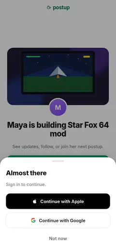
2 · Share link · project + signin
Follow 🔒 → sign-in sheet. [FS] [M1024]
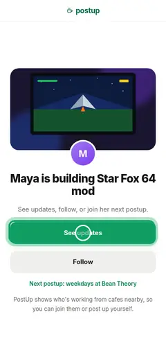
3 · Share link · project
Sign-in returns to the same page, now following (Follow has no continuation). [M1031-draft]
● taps “See updates”
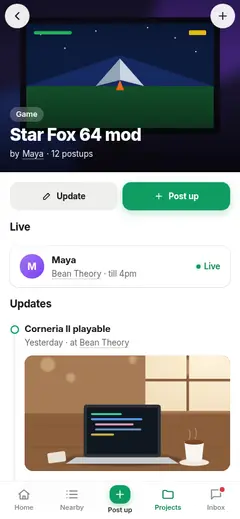
4 · Project
Following; live postups for the project shown. [FS] [M1024]
Ask to join, then get approved (joiner side)
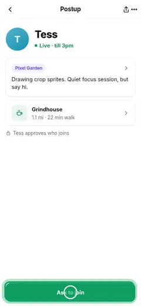
1 · Postup · ask to join
"Tess approves who joins". [FS] [F055]
⇄ 1 flow enterable here
● taps “Ask to join”
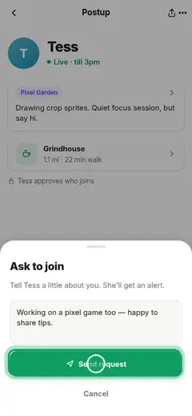
2 · Ask to join
Short reason. [F061] [F095]
● taps “Send request”
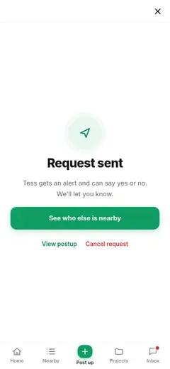
3 · Request sent
Request sent; can cancel. [FS] [drawn]
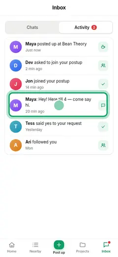
4 · Inbox · Activity
Activity: "Tess said yes". [FS] [M1024]
⇄ 3 flows enterable here
● taps “M”

5 · Group chat
Now in the postup chat. [F061] [F096]
⇄ 1 flow enterable here
Host approves a request
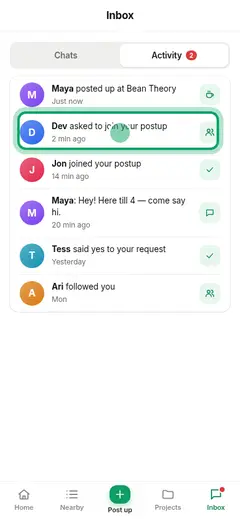
1 · Inbox · Activity
Alert: "Ari asked to join". [FS]
⇄ 3 flows enterable here
● taps “D”
2 · You're live
Requests with reason: Approve / Decline. [FS] [F061]
⇄ 2 flows enterable here
● taps “D”
3 · Profile
Optionally checks the asker's profile first. [FS] [M1024]
● taps Back
4 · You're live
Back on your live postup; the profile has no chat link (as in the app). [M1031-draft]
⇄ 2 flows enterable here
● taps “Group chat”

5 · Group chat
Approved people are in the chat. [F061] [F096]
⇄ 1 flow enterable here
Project builder: create, update, post up for it
1 · Projects
Projects, "+". [FS]
⇄ 1 flow enterable here
● taps “New project”
2 · New project
Cover, name, kind, one line. [FS] [drawn]
● taps “Create”
3 · Project
New project page. [FS]
⇄ 1 flow enterable here
● taps “Update”
4 · Project update
Post an update with image. [FS] [R35]
● taps “Post update”
5 · Project
Back on the project (Update has no Post up link, as in the app). [M1031-draft]
⇄ 1 flow enterable here
● taps “Post up”
6 · Post up for a project
Post up for this project, now or earlier today. [FS]
● taps “Post up”

7 · You're posted up
Posted, tied to the project. [FS]
⇄ 2 flows enterable here
Follow a person or project
1 · Profile
Follow → Following. [FS]
⇄ 1 flow enterable here
● taps “Star Fox 64 mod”

2 · Project
Profile has no tab bar (as in the app), so: project first, then the Projects tab. [M1031-draft]
⇄ 1 flow enterable here
● taps “Projects”
3 · Projects
Projects → Following filter. [FS] [R32]
⇄ 1 flow enterable here
4 · Inbox · Activity
Later: "Maya posted up" alert. [FS] [M1024] Event "someone you follow posts up": the alert lands in Activity and Nearby now has someone live. [M1031-draft]
⇄ 3 flows enterable here
● taps “M”
5 · Postup · anyone can join
Opens and joins. [FS]
⇄ 2 flows enterable here
Postup ends, fills or is cancelled while you look
1 · Postup full
Full. [F060] [R47]
● taps Back
2 · Postup cancelled
Cancelled. [F060] [R47]
● taps Back
3 · Postup full
Back to the full postup (split: a cancelled postup doesn't later end). [M1031-draft]
● taps Back
4 · Postup ended
Ended: see what's nearby, follow. [drawn] Ending is this postup's status; others may still be live nearby. [M1031-draft]
⇄ 1 flow enterable here
Slow network and offline
Delete account

Desktop browse and post
1 · Home page (/)
Map with 440px panel. [FS]
⇄ 2 flows enterable here
● taps “M”
2 · Postup · anyone can join
Postup in the panel. [FS]
⇄ 1 flow enterable here
● taps Back
3 · Post up
Post up as a centered dialog. [FS]
⇄ 1 flow enterable here
● taps “Post up”
4 · You're posted up
Posted. [FS]
⇄ 2 flows enterable here
Notification settings and sign out
Catch up on what happened
1 · Home page (/)
Home in Live mode; Inbox tab shows an unread dot. [drawn] [M1031-draft]
⇄ 2 flows enterable here
2 · Inbox · Chats
Chats: group chats, newest first, including an ended postup. [drawn] [M1031-draft]
● taps “Activity”
3 · Inbox · Activity
Activity: joins, requests, approvals, follows, messages. [drawn] [M1031-draft]
⇄ 3 flows enterable here
● taps “T”
4 · Postup · ask to join
Tess's postup. [drawn] [M1031-draft]
⇄ 1 flow enterable here
● taps Back
5 · Inbox · Activity
Activity again. [drawn] [M1031-draft]
⇄ 3 flows enterable here
● taps “Chats”
6 · Inbox · Chats
Chats list. [drawn] [M1031-draft]
● taps “T”
7 · Postup ended
Ended postup: see what's nearby, follow. [drawn] [M1031-draft]
● taps Back
8 · Inbox · Chats
Chats list. [drawn] [M1031-draft]
● taps “M”

9 · Group chat
Group chat with the latest replies. [drawn] [M1031-draft]
⇄ 1 flow enterable here